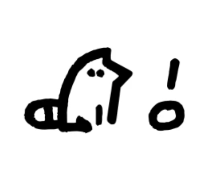

Toki Pona
Toki Pona is a constructed language with a vocabulary of just over 120 words using only 14 phonemes:
a e i j k l m n o p s t u w
Toki Pona is a constructed language with a vocabulary of just over 120 words using only 14 phonemes:
a e i j k l m n o p s t u w
Words have multiple meanings, as nouns, verbs, adjectives or adverbs:
telo – water / wet / to wash.
Adjectives follow nouns, modify them:
soweli suli – big animal = elephant.
jan lili – small person = child.
[subject] li [verb] {e [object]}
soweli li moku – a cat is eating / the dog eats / pets are drinking.
mi (me) and sina (you) don't need li: mi moku; sina toki – I eat; you speak.
Use e before the object: mi moku e kili – I eat fruit.
Use la to set context: mi toki la sina moku – when I speak, you eat.
Use pi for grouping: toki pi jan pona – language of good men; but toki jan pona – good man speaks.
Use o for commands: o moku! – Eat!
Use en for "and": mi en sina – me and you.
Use anu for "or": mi moku anu toki – I eat or speak.
kepeken, lon, sama, tan, tawa are also verbs: mi lon tomo – I am at home.
wile, kama, sona, lukin, ken, awen act as preverbs: mi wile moku – I want to eat.
Use ala for negation: mi moku ala – I am not eating.
Use ala for yes-no questions: sina moku ala moku? – are you eating?
To say "yes" repeat the verb: moku, to say "no" use ala: moku ala.
Use seme for open questions: sina moku seme? – what are you eating?
Use anu seme for tag questions: sina moku anu seme? – you are eating, aren't you?
wan=1, tu=2, luka=5, mute=20, ale=100. luka tu wan=7.
toki! – Hello!
sina pilin seme? – How are you?
nimi mi li... – My name is...
sina sona ala sona? – Do you understand?
o toki kepeken tenpo mute - Say slowly.
o toki sin e ni - Please say again.
mi pakala – Sorry.
mi wile – Please.
pona – Thank you.
mi olin e sina – I love you.
tomo telo li lon seme? – Where is the bathroom?
tomo tawa supa mi pi lon sewi li jo e kala linja mute mute – My hovercraft is full of eels.
a [a!] • akesi reptile • ala no • alasa hunt • ale all • anpa low • ante other • anu [or] • awen keep • e [obj] • en [and] • esun shop • ijo thing • ike bad • ilo tool • insa centre • jaki gross • jan man • jelo yellow • jo have • kala fish • kalama sound • kama come • kasi plant • ken can • kepeken use • kili fruit • kiwen hard • ko clay • kon air • kule colour • kulupu group • kute hear • la [ctx] • lape sleep • laso blue • lawa head • len cloth • lete cold • li [pred] • lili small • linja rope • lipu page • loje red • lon at • luka hand • lukin see • lupa hole • ma land • mama parent • mani money • meli woman • mi me • mije male • moku eat • moli dead • monsi back • mu [moo!] • mun moon •
musi fun • mute many • nanpa number • nasa crazy • nasin way • nena bump • ni this • nimi name • noka leg • o [o!] • olin love • ona they • open open • pakala break • pali do • palisa stick • pan bread • pana give • pi [of] • pilin heart • pimeja dark • pini end • pipi bug • poka side • poki bag • pona good • sama same • seli hot • selo layer • seme what • sewi top • sijelo body • sike round • sin new • sina you • sinpin face • sitelen image • sona know • soweli animal • suli big • suno sun • supa surface • suwi sweet • tan from • taso but • tawa go • telo water • tenpo time • toki say • tomo home • tu 2 • unpa sex • uta mouth • utala fight • walo white • wan 1 • waso bird • wawa strong • weka away • wile want
...and one last word:
kijetesantakalu
any animal from the Procyonidae family, such as raccoons, coatis, kinkajous, olingos, ringtails and cacomistles.